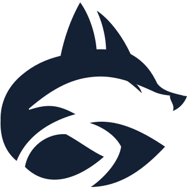
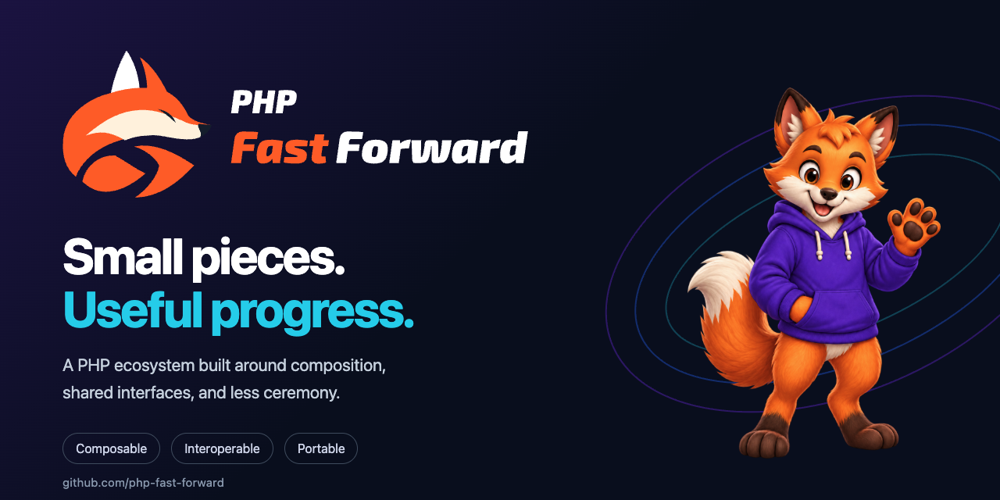
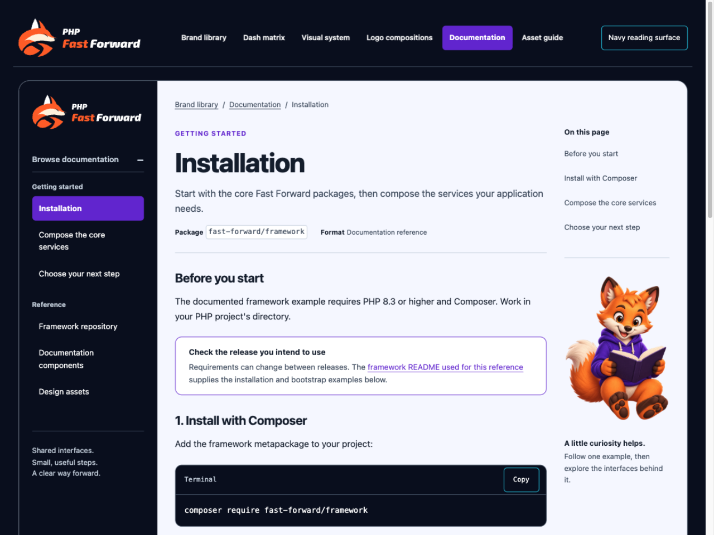

Selected direction · Fox in motion
A familiar face. A forward gesture.
The fox links the signature to Dash. Orange gives Fast its energy; compact italic lettering carries the framework's technical character.
The primary signature.
Solid orange, cream and ink. Every letter is a vector path. The signature renders consistently without installed fonts or raster artwork.

One geometry. Four applications.
All variants share the same symbol, outlined lettering and spacing. Monochrome muzzle details are transparent cutouts.





A signature, with a companion.
The logo identifies the framework. Mature Dash brings personality to repository covers, documentation and developer stories. Editorial Dash remains available for welcoming community moments.


Keep it recognizable.
The source file and generator establish the production master. Use the exported variants as a unit.
- Reserve clear space of at least one quarter of the fox's height on all sides.
- Preserve proportions, lettering, orange Fast, and the gap between the two words.
- Use the dark-surface or white export on navy. Give the mark a plain, contrasting surface.
- Keep Dash's character anatomy anchored to the mascot matrix; the flat symbol is a separate brand asset.
- Lettering uses Exo 2 Italic at weight 900, authored into paths. Font license and pinned source record are included.